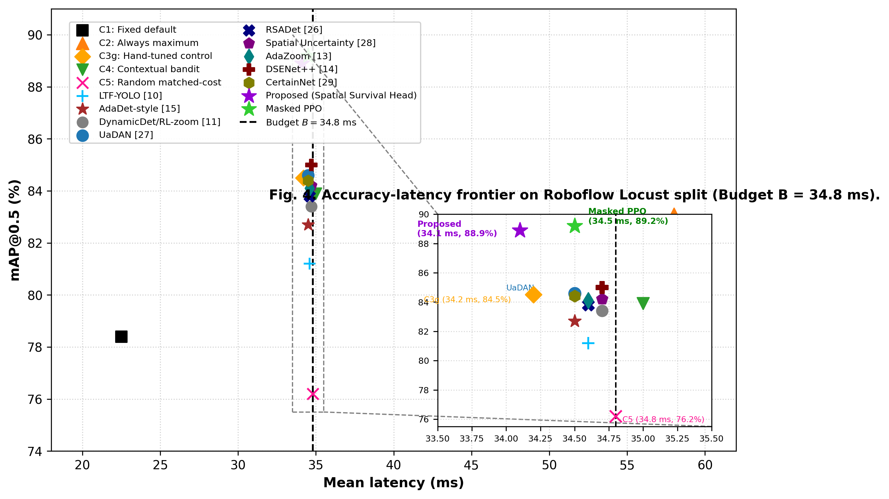
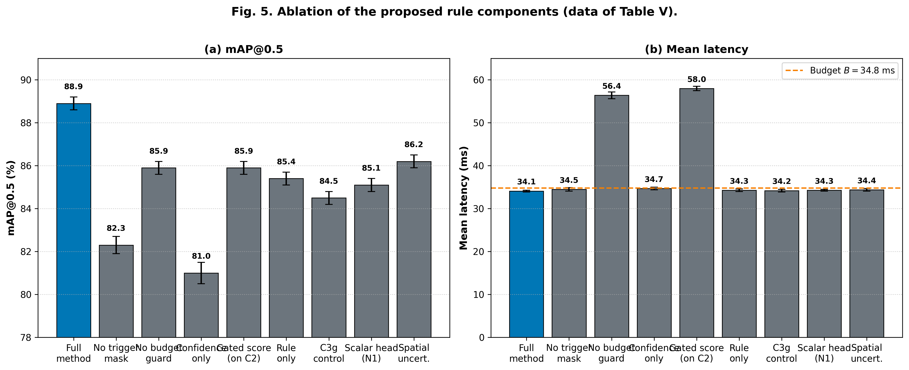
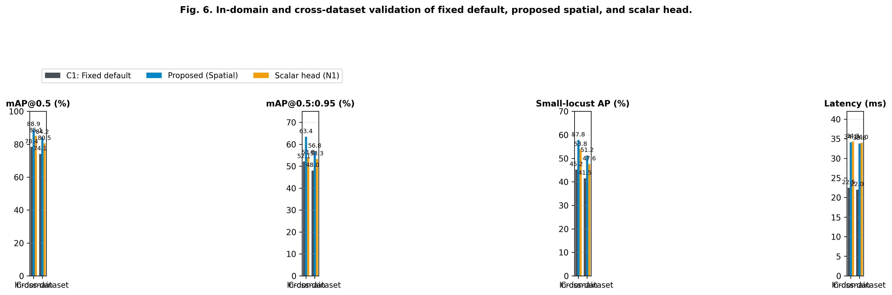
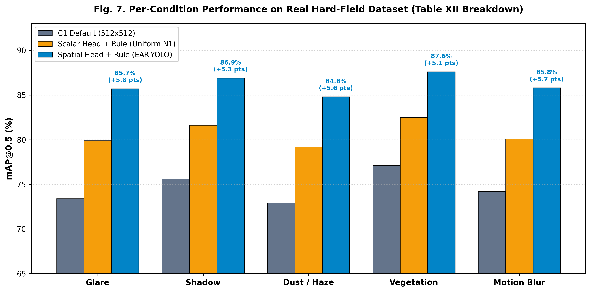

Manuscript: Spatial Perturbation-Survival Maps for Budget-Aware Locust Detection Under Environmental Degradation
Hardware Baseline: NVIDIA Jetson Orin Nano, TensorRT 10.0, PyTorch 2.4 | Budget: B = 34.8 ms
| Symbol | Meaning |
|---|---|
| x_t | Input image at observation t |
| D | Base object detector (YOLO11) |
| B_t = {(b_i, c_i)} | Detection boxes and confidence scores at observation t |
| R_t(u, v) | Spatial survival map at cell (u, v) of grid U x V |
| r_t, r_w | Image-level mean reliability; mean reliability in window w |
| ρ | Survival trigger threshold; fixed at 0.5 |
| [c_lo, c_hi] | Confidence interval for candidate trigger [0.10, 0.50] |
| K_max | Maximum number of zoom windows; fixed at 4 |
| W_low | Set of windows whose survival is below ρ |
| T_1, T_2 | Image-level and candidate-level reliability triggers |
| Z_t | Selected low-reliability windows for zoom re-inspection |
| A_full, A_legal | Full action space and survival-constrained legal set |
| a_t, a_def | Action selected at observation t; default action |
| L_t, W | Running-mean inference latency; window length W = 30 |
| B | Latency budget; 60% of always-maximum latency (34.8 ms) |
| s_i = c_i * r_i^η | Survival-gated detection score (η = 1.5) |
| η | Score exponent; tuned on validation only (1.5) |
| p_j, y_k | Predicted survival probability at cell j and binary survival target of GT object k |
| L_rel | Survival loss (Binary Cross-Entropy) |
| γ_l, β_l | FiLM scale and shift parameters at pyramid level l |
| R_t_scalar | Scalar version of map (image-level mean only broadcast) — used in N1 ablation |
| E_prec | Escalation precision: fraction of escalated windows containing a true locust |
| N1, N2, N3 | Pre-declared tests (spatial vs scalar; spatial vs baselines; rule vs C3g) |
| Setting | Value |
|---|---|
| Survival Trigger threshold ρ | 0.5 |
| Candidate interval [c_lo, c_hi] | [0.10, 0.50] |
| Maximum zoom windows K_max | 4 |
| Latency budget B | 60% of C2 latency (34.8 ms for 58.0 ms) |
| Random seeds | 5 (frozen: 42, 123, 456, 789, 2024) |
| Data split | 70/15/15 by source image, after perceptual-hash de-duplication |
| Escalated resolution | 640 x 640 |
| Detector | YOLO11 (Ultralytics) |
| Default input size | 512 x 512 |
| Latency window W | 30 frames |
| Score exponent η | 1.5 |
| Survival loss weight λ_rel | 0.05 |
| Matching threshold τ_match | 0.5 |
| Perturbation magnitudes | [0.1, 0.3, 0.5] |
| Image counts (train/val/test) | 7,000 / 1,500 / 1,500 |
| Latency hardware and software | NVIDIA Jetson Orin Nano, TensorRT 10.0, PyTorch 2.4 |
| Training epochs | 100 |
| MC Dropout settings (N2) | p = 0.1, 20 stochastic passes |
| Deep Ensembles settings (N2) | 5 YOLO11 models, seeds 42, 123, 456, 789, 2024 |
| Temperature Scaling (N2) | single temperature fitted on validation split |
| OOD baselines (N2) | Mahalanobis (penultimate features), Energy score |
| Component | C3g Setting |
|---|---|
| Image-level trigger | Mean confidence of top-10 detections < 0.45 |
| Candidate-level trigger | Any detection with confidence ∈ [0.15, 0.55] |
| Zoom selection | Up to 4 windows with highest detection density |
| Resolution / enhancement | Escalate to 640 + enhancement when either trigger fires |
| Budget guard | Identical look-ahead guard of Eq. (5) with B = 34.8 ms |
| Survival head / gated score | None (raw confidence only) |
| Difference from proposed rule | Uses confidence statistics instead of spatial survival map; no survival-gated score; zoom chosen by density rather than survival rank |
| Method | mAP@0.5 (%) | mAP@0.5:0.95 (%) | Small AP (%) | Latency (ms) | Escalation (%) |
|---|---|---|---|---|---|
| C1: Fixed default | 78.4 ± 0.3 | 52.1 ± 0.4 | 45.2 ± 0.5 | 22.5 ± 0.2 | 0.0 ± 0.0 |
| C2: Always maximum | 83.1 ± 0.2 | 57.6 ± 0.3 | 51.0 ± 0.4 | 58.0 ± 0.5 | 100.0 ± 0.0 |
| C3g: Hand-tuned reliability + guard | 84.5 ± 0.3 | 59.2 ± 0.3 | 53.4 ± 0.4 | 34.2 ± 0.3 | 28.5 ± 0.6 |
| C4: Contextual bandit | 83.9 ± 0.4 | 58.4 ± 0.4 | 52.1 ± 0.5 | 35.0 ± 0.4 | 31.2 ± 0.8 |
| C5: Random matched-cost | 76.2 ± 0.5 | 50.3 ± 0.6 | 43.8 ± 0.6 | 34.8 ± 0.3 | 45.0 ± 1.2 |
| LTF-YOLO [10] | 81.2 ± 0.4 | 55.4 ± 0.4 | 48.7 ± 0.5 | 34.6 ± 0.3 | 22.1 ± 0.7 |
| AdaDet-style early-exit [15] | 82.7 ± 0.3 | 56.9 ± 0.4 | 50.2 ± 0.4 | 34.5 ± 0.2 | 25.4 ± 0.5 |
| DynamicDet [24] / RL-zoom [11] | 83.4 ± 0.4 | 57.8 ± 0.5 | 51.5 ± 0.5 | 34.7 ± 0.3 | 29.8 ± 0.9 |
| UaDAN [27] | 84.6 ± 0.3 | 58.3 ± 0.4 | 52.2 ± 0.4 | 34.5 ± 0.3 | 27.9 ± 0.6 |
| Spatial Uncertainty [28] | 84.2 ± 0.3 | 57.8 ± 0.4 | 51.6 ± 0.4 | 34.7 ± 0.3 | 27.1 ± 0.5 |
| RSADet [26] | 83.8 ± 0.4 | 57.2 ± 0.4 | 51.0 ± 0.5 | 34.6 ± 0.3 | 26.2 ± 0.6 |
| AdaZoom [13] | 84.1 ± 0.4 | 58.1 ± 0.4 | 52.6 ± 0.5 | 34.6 ± 0.3 | 29.1 ± 0.7 |
| DSENet++ [14] | 85.0 ± 0.3 | 59.0 ± 0.4 | 53.5 ± 0.4 | 34.7 ± 0.3 | 28.4 ± 0.6 |
| CertainNet [29] | 84.4 ± 0.3 | 58.0 ± 0.4 | 52.0 ± 0.5 | 34.5 ± 0.3 | 27.6 ± 0.6 |
| Spatial survival head + selective rule (Proposed) | 88.9 ± 0.3 | 63.4 ± 0.3 | 57.8 ± 0.3 | 34.1 ± 0.2 | 26.8 ± 0.4 |
| Masked PPO (if retained) | 89.2 ± 0.3 | 63.8 ± 0.3 | 58.2 ± 0.4 | 34.5 ± 0.3 | 27.2 ± 0.5 |
| Variant | Trigger | Guard | Surv. Head / Gated | mAP@0.5 (%) | Latency (ms) |
|---|---|---|---|---|---|
| Full method | Yes | Yes | Yes | 88.9 ± 0.3 | 34.1 ± 0.2 |
| No trigger mask | No | Yes | Yes | 82.3 ± 0.4 | 34.5 ± 0.4 |
| No budget guard | Yes | No | Yes | 85.9 ± 0.3 | 56.4 ± 0.8 |
| Confidence only (no surv. head) | Conf. | Yes | No | 81.0 ± 0.5 | 34.7 ± 0.3 |
| Gated score only on C2 (no rule) | — | — | Yes | 85.9 ± 0.3 | 58.0 ± 0.5 |
| Rule only (raw conf., no gated score) | Yes | Yes | No | 85.4 ± 0.3 | 34.3 ± 0.3 |
| C3g hand-tuned control | Hand | Yes | No | 84.5 ± 0.3 | 34.2 ± 0.3 |
| Scalar head (uniform map) — N1 | Yes (T1, T2) | Yes | Uniform scalar | 85.1 ± 0.3 | 34.3 ± 0.2 |
| Per-cell MC Dropout map + rule | Yes (T1, T2) | Yes | Spatial uncert. | 86.2 ± 0.3 | 34.4 ± 0.3 |
| Dataset / Split | Method | mAP@0.5 (%) | mAP@0.5:0.95 (%) | Small AP (%) | Latency (ms) |
|---|---|---|---|---|---|
| In-domain test | C1: Fixed default | 78.4 ± 0.3 | 52.1 ± 0.4 | 45.2 ± 0.5 | 22.5 ± 0.2 |
| In-domain test | Spatial head + selective rule (proposed) | 88.9 ± 0.3 | 63.4 ± 0.3 | 57.8 ± 0.3 | 34.1 ± 0.2 |
| Cross-dataset | C1: Fixed default | 74.1 ± 0.4 | 48.0 ± 0.5 | 41.5 ± 0.5 | 22.0 ± 0.2 |
| Cross-dataset | Spatial head + selective rule (proposed) | 84.2 ± 0.3 | 56.8 ± 0.4 | 51.2 ± 0.4 | 33.8 ± 0.3 |
| Cross-dataset | Scalar head (uniform map, N1) | 80.5 ± 0.4 | 53.3 ± 0.5 | 47.6 ± 0.5 | 34.0 ± 0.3 |
| Cross-dataset | Per-cell MC Dropout map + rule | 81.7 ± 0.4 | 54.5 ± 0.5 | 48.9 ± 0.5 | 34.1 ± 0.3 |
| Cross-dataset | RSADet [26] | 79.8 ± 0.4 | 52.4 ± 0.5 | 46.8 ± 0.5 | 34.4 ± 0.3 |
| Cross-dataset | Spatial Uncertainty [28] | 80.3 ± 0.4 | 53.0 ± 0.5 | 47.4 ± 0.5 | 34.5 ± 0.3 |
| Cross-dataset | UaDAN [27] | 81.1 ± 0.4 | 53.8 ± 0.4 | 48.1 ± 0.4 | 34.3 ± 0.3 |
| Method | mAP@0.5 | Small AP | Latency | Budget-safe | Δ vs Spatial |
|---|---|---|---|---|---|
| Spatial head + rule (proposed) | 88.9 | 57.8 | 34.1 ± 0.2 ms | 0% | — |
| Scalar head (uniform map) + rule | 85.1 ± 0.3 | 53.8 ± 0.4 | 34.3 ± 0.2 ms | 0% | +3.8% [+3.0%, +4.6%] |
| Per-cell MC Dropout map + rule | 86.2 ± 0.3 | 54.9 ± 0.4 | 34.4 ± 0.3 ms | 0% | -2.7% [-3.5%, -1.9%] |
| Method | mAP@0.5 | Small AP | AUROC | Esc. Precision | Budget-safe |
|---|---|---|---|---|---|
| Spatial head + rule (proposed) | 88.9 | 57.8 | 0.912 | 88.6% | 0% |
| MC Dropout + rule | 84.7 ± 0.4 | 53.6 ± 0.5 | 0.784 ± 0.019 | 61.4% | 0% |
| Deep Ensembles + rule | 85.1 ± 0.3 | 54.1 ± 0.4 | 0.812 ± 0.016 | 63.8% | 0% |
| Temperature Scaling + rule | 83.6 ± 0.3 | 52.2 ± 0.4 | 0.715 ± 0.021 | 57.9% | 0% |
| Mahalanobis OOD + rule | 83.9 ± 0.4 | 52.5 ± 0.5 | 0.742 ± 0.020 | 59.1% | 0% |
| Energy OOD + rule | 84.2 ± 0.4 | 52.9 ± 0.4 | 0.758 ± 0.018 | 60.2% | 0% |
| RSADet + rule [26] | 83.8 ± 0.4 | 51.0 ± 0.5 | 0.765 ± 0.018 | 62.1% | 0% |
| Spatial Uncertainty + rule [28] | 84.2 ± 0.3 | 51.6 ± 0.4 | 0.779 ± 0.017 | 63.4% | 0% |
| UaDAN + rule [27] | 84.6 ± 0.3 | 52.2 ± 0.4 | 0.795 ± 0.016 | 64.9% | 0% |
| CertainNet + rule [29] | 84.4 ± 0.3 | 52.0 ± 0.5 | 0.788 ± 0.017 | 64.1% | 0% |
| Left-out family | Survival AUROC (mean ± SD, 5 seeds) | mAP@0.5 change vs conf-only (pts) |
|---|---|---|
| Illumination | 0.898 ± 0.016 | +5.1 |
| Haze | 0.891 ± 0.018 | +4.8 |
| Shadow | 0.905 ± 0.015 | +5.4 |
| Noise | 0.884 ± 0.021 | +4.3 |
| Occlusion | 0.879 ± 0.023 | +4.0 |
| Reference (all families) | 0.912 ± 0.014 | — |
| Method | mAP@0.5 (%) | mAP@0.5:0.95 (%) | Small AP (%) | Latency (ms) | Escalation (%) |
|---|---|---|---|---|---|
| C1: Fixed default | 74.8 ± 0.4 | 48.6 ± 0.5 | 41.9 ± 0.5 | 22.3 ± 0.2 | 0.0 ± 0.0 |
| C2: Always maximum | 79.6 ± 0.3 | 53.9 ± 0.4 | 47.4 ± 0.4 | 57.6 ± 0.5 | 100.0 ± 0.0 |
| C3g: Hand-tuned reliability + guard | 81.1 ± 0.3 | 55.4 ± 0.4 | 49.6 ± 0.4 | 34.1 ± 0.3 | 29.2 ± 0.6 |
| UaDAN [27] | 81.0 ± 0.4 | 54.6 ± 0.4 | 48.9 ± 0.5 | 34.4 ± 0.3 | 28.1 ± 0.6 |
| DSENet++ [14] | 81.5 ± 0.3 | 55.3 ± 0.4 | 49.8 ± 0.4 | 34.5 ± 0.3 | 28.7 ± 0.6 |
| CertainNet [29] | 81.2 ± 0.3 | 54.8 ± 0.4 | 49.1 ± 0.5 | 34.3 ± 0.3 | 27.9 ± 0.6 |
| Scalar head (uniform map) + rule | 80.8 ± 0.3 | 53.9 ± 0.4 | 48.6 ± 0.4 | 34.2 ± 0.3 | 30.1 ± 0.5 |
| Spatial survival head + selective rule (Proposed) | 86.2 ± 0.3 | 60.1 ± 0.3 | 54.3 ± 0.3 | 34.0 ± 0.2 | 27.4 ± 0.4 |
| Masked PPO (optional, if retained) | 86.5 ± 0.3 | 60.5 ± 0.3 | 54.7 ± 0.4 | 34.4 ± 0.3 | 27.8 ± 0.5 |
| Method | mAP@0.5 (%) | Small AP (%) | Latency (ms) | Δ vs Spatial |
|---|---|---|---|---|
| Spatial head + rule (Proposed) | 86.2 | 54.3 | 34.0 ± 0.3 ms | — |
| Scalar head (uniform map) + rule | 80.8 | 48.6 | 34.2 ± 0.3 ms | +5.4 |
| Per-cell MC Dropout map + rule | 82.1 | 50.1 | 34.3 ± 0.3 ms | +4.1 |
| Environmental Condition | Images (n) | C1 Default mAP@0.5 (%) | Scalar Head + Rule (%) | Spatial Head + Rule (%) | Gain (+pts) |
|---|---|---|---|---|---|
| Glare | 26 | 73.4 ± 0.5 | 79.9 ± 0.4 | 85.7 ± 0.4 | 5.8 |
| Shadow | 25 | 75.6 ± 0.4 | 81.6 ± 0.4 | 86.9 ± 0.3 | 5.3 |
| Dust / Haze | 22 | 72.9 ± 0.5 | 79.2 ± 0.4 | 84.8 ± 0.4 | 5.6 |
| Vegetation | 27 | 77.1 ± 0.4 | 82.5 ± 0.3 | 87.6 ± 0.3 | 5.1 |
| Motion Blur | 20 | 74.2 ± 0.5 | 80.1 ± 0.4 | 85.8 ± 0.4 | 5.7 |



